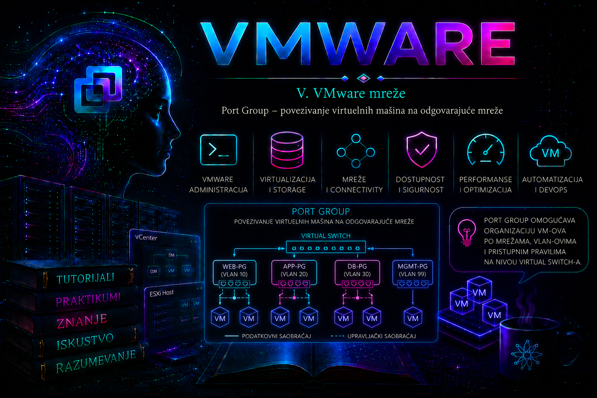

VMware

Port Group predstavlja logičku grupu portova na VMware virtuelnom switchu preko koje se virtuelne mašine i VMkernel adapteri povezuju sa odgovarajućom mrežom. Virtuelna mašina se u praksi ne povezuje samo sa nazivom vSwitch-a, već bira konkretnu port grupu koja određuje kojoj mreži pripada i koja mrežna pravila se na njen saobraćaj primenjuju.
Port grupa omogućava da jedan virtuelni switch prenosi više različitih vrsta saobraćaja. Na istom vSwitch-u mogu, na primer, postojati odvojene port grupe za produkcione servere, testne sisteme, management, vMotion ili storage mrežu. Svaka port grupa može imati sopstveni naziv, VLAN identifikator, bezbednosnu politiku, NIC teaming i traffic shaping podešavanja.
Zbog toga port grupa nije samo naziv mreže prikazan prilikom uređivanja virtuelne mašine. Ona predstavlja administrativnu granicu između različitih mrežnih segmenata i jedan je od najvažnijih elemenata pravilnog projektovanja VMware mreža.
Mesto port grupe u VMware mrežnoj arhitekturi
Osnovni put mrežnog saobraćaja virtuelne mašine izgleda ovako:
Virtuelna mašina
|
Virtuelni mrežni adapter – vNIC
|
Port Group
|
Virtual Switch
|
Fizički uplink – vmnic
|
Fizički mrežni switch
|
Ostatak mreže
Port grupa se nalazi između virtuelnog mrežnog adaptera i virtuelnog switcha. Ona obezbeđuje skup pravila koja važe za sve virtuelne adaptere povezane na tu grupu.
Na primer:
VM-Web01
|
Network adapter 1
|
PG-PROD-WEB
|
vSwitch-Production
|
vmnic2 i vmnic3
|
Fizička produkciona mreža
U ovom primeru naziv PG-PROD-WEB administratoru jasno pokazuje da virtuelna mašina pripada produkcionoj mreži namenjenoj web serverima.
Zašto su port grupe potrebne?
Bez port grupa sve virtuelne mašine na jednom vSwitch-u morale bi da koriste ista mrežna podešavanja. Port grupe omogućavaju razdvajanje i organizovanje saobraćaja prema njegovoj nameni.
Tipične port grupe mogu biti:
PG-PROD-WEB– produkcioni web serveriPG-PROD-DB– produkcioni serverski segment za baze podatakaPG-DEV– razvojno okruženjePG-TEST– testni sistemiPG-DMZ– sistemi u demilitarizovanoj zoniManagement Network– upravljanje ESXi hostomvMotion– migracija aktivnih virtuelnih mašinaiSCSI-01iiSCSI-02– storage saobraćajvSAN– komunikacija vSAN klastera
Naziv port grupe ne stvara VLAN niti automatski obezbeđuje mrežnu izolaciju. Naziv služi administratoru i vSphere objektima, dok se stvarno razdvajanje saobraćaja postiže odgovarajućom VLAN, fizičkom i routing konfiguracijom.
Standard Port Group i Distributed Port Group
U VMware okruženju postoje dve osnovne vrste port grupa:
- Standard Port Group – pripada vSphere Standard Switch-u na jednom ESXi hostu
- Distributed Port Group – pripada vSphere Distributed Switch-u i centralno se upravlja kroz vCenter Server
Standardna port grupa postoji lokalno na svakom hostu. Ako klaster ima četiri ESXi hosta, port grupa potrebna za vMotion ili za virtuelne mašine mora biti pravilno kreirana na svakom hostu na kojem će se ta mreža koristiti.
Distributed port grupa centralno se definiše na Distributed Switch-u i njena konfiguracija distribuira se povezanim hostovima. Ona omogućava doslednije upravljanje većim okruženjima i podržava dodatne funkcionalnosti.
U ovoj lekciji fokus je na standardnim port grupama, jer se na njima najjasnije vidi odnos između hosta, virtuelnog switcha, port grupe, VLAN-a i fizičkog uplinka.
| Osobina | Standard Port Group | Distributed Port Group |
|---|---|---|
| Opseg konfiguracije | Lokalni ESXi host; mora se uskladiti na svakom hostu. | vCenter objekat na vSphere Distributed Switch-u; politika se distribuira pridruženim hostovima. |
| Upravljanje | Host Client, vSphere Client, ESXCLI ili PowerCLI. | vSphere Client, VCF PowerCLI ili vSphere API; ESXCLI na hostu služi pre svega za pregled i recovery, ne za redovno upravljanje dvPortGroup objektima. |
| Politike i vidljivost | VLAN, outbound shaping, security i NIC teaming/failover. | Pored zajedničkih politika podržava centralizovanu port-level vidljivost i, zavisno od verzije i licence, mogućnosti kao što su Network I/O Control, health check, port mirroring, NetFlow i traffic filtering and marking. |
| Port binding | Nije primenljivo kao dvPortGroup izbor. | Static binding je uobičajen i preporučen; ephemeral se čuva za opravdane recovery scenarije. Dynamic binding je zastareo. |
| Preduslov | Ne zahteva vCenter za lokalno postojanje i rad. | Zahteva vCenter za centralno upravljanje i odgovarajuće licencno pravo; tačan entitlement mora se proveriti za ugovorenu vSphere/VCF ponudu. |
Distributed port grupa nije „bolja” samo zato što je centralizovana. Ona je opravdana kada doslednost velikog broja hostova, napredna telemetrija i kontrola politika nadmašuju dodatnu zavisnost od vCenter-a i potrebu za pažljivo projektovanim recovery pristupom. Za malu laboratoriju ili samostalan host standardna port grupa je jednostavniji i potpuno valjan izbor.
Na distribuiranoj port grupi VLAN se savremeno automatizuje cmdletima kao što su Get-VDPortgroup i Set-VDVlanConfiguration. Stariji -VlanId i -VlanTrunkRange parametri cmdleta Set-VDPortgroup označeni su kao zastareli u aktuelnoj VCF PowerCLI referenci. Ova lekcija zato ne prikazuje zastareli obrazac kao preporučenu proceduru.
Port grupa za virtuelne mašine
Virtuelna mašina povezuje svoj vNIC sa port grupom namenjenom VM saobraćaju. Operativni sistem gosta zatim koristi taj adapter kao običnu mrežnu karticu.
Port grupa određuje:
- na koji je vSwitch VM povezana
- koji VLAN koristi njen saobraćaj
- preko kojih uplinkova saobraćaj može da izlazi
- koja bezbednosna pravila važe
- da li se primenjuje traffic shaping
IP adresa virtuelne mašine najčešće se ne podešava na port grupi. Ona se konfiguriše unutar operativnog sistema gosta, ručno ili preko DHCP servisa.
Port grupa obezbeđuje Layer 2 povezanost, dok se Layer 3 konfiguracija, kao što su IP adresa, maska, gateway i DNS, obično podešava u gostujućem operativnom sistemu.
Port grupa za VMkernel adapter
ESXi host koristi VMkernel adaptere za sopstveni mrežni saobraćaj. VMkernel adapter se takođe povezuje sa odgovarajućom port grupom.
VMkernel port grupe mogu se koristiti za:
- management saobraćaj
- vMotion
- Provisioning
- Fault Tolerance logging
- vSAN
- iSCSI ili NFS storage
- vSphere Replication
- backup i druge infrastrukturne servise
VMkernel adapter dobija sopstvenu IP adresu. Njegova port grupa određuje Layer 2 mrežu, VLAN i pravila pristupa fizičkim uplinkovima.
Primer:
vmk1 – 10.100.20.11/24
|
PG-vMotion
|
vSwitch-Services
|
vmnic2 i vmnic3
|
VLAN 120
VMkernel adapteri i njihove servisne funkcije detaljno se obrađuju u posebnoj lekciji.
Network Label – naziv port grupe
Svaka port grupa ima mrežnu oznaku, odnosno naziv koji se prikazuje u vSphere Client-u i koristi pri povezivanju virtuelnih mrežnih adaptera.
Nazivi treba da budu:
- jasni
- dosledni
- jedinstveni na odgovarajućem hostu
- usklađeni između hostova klastera
- dovoljno opisni da pokažu namenu mreže
Loši nazivi:
Network1
Network2
Test
Nova mreza
VM Network 2
Bolji nazivi:
PG-PROD-WEB-VLAN110
PG-PROD-DB-VLAN120
PG-DEV-VLAN210
PG-DMZ-VLAN310
PG-vMotion-VLAN410
Nije obavezno da VLAN ID bude deo naziva, ali to može olakšati administraciju. Organizacija treba da odabere jednu konvenciju i primenjuje je dosledno.
Zašto isti naziv mora postojati na svim hostovima?
Kod standardnih switcheva port grupe su lokalne za ESXi host. Ako virtuelna mašina treba da se migrira pomoću vMotion-a, odgovarajuća mreža mora postojati i na ciljnom hostu.
Pretpostavimo da VM koristi port grupu:
PG-PROD-WEB
Na ciljnom hostu treba proveriti:
- da li port grupa postoji
- da li je njen naziv identičan
- da li koristi isti VLAN ID
- da li je povezana sa odgovarajućim fizičkim uplinkovima
- da li fizički switch portovi prenose isti VLAN
- da li su teaming i security pravila usklađeni
Samo postojanje port grupe istog naziva nije dovoljno ako ona na drugom hostu koristi drugačiji VLAN ili pogrešan fizički uplink.
Pregled standardnih port grupa pomoću ESXCLI-ja
Prikaz svih standardnih port grupa na ESXi hostu:
esxcli network vswitch standard portgroup list
Primer izlaza:
Name Virtual Switch Active Clients VLAN ID
------------------ ------------------- -------------- -------
Management Network vSwitch0 1 0
VM Network vSwitch0 3 0
PG-PROD-WEB vSwitch-Production 6 110
PG-PROD-DB vSwitch-Production 4 120
PG-vMotion vSwitch-Services 1 410
Kolone prikazuju:
- Name – naziv port grupe
- Virtual Switch – standardni switch kojem port grupa pripada
- Active Clients – broj aktivno povezanih klijenata
- VLAN ID – VLAN konfiguraciju port grupe
Aktivni klijent može biti virtuelni mrežni adapter ili VMkernel adapter povezan sa port grupom.
Pregled celokupne standardne mrežne konfiguracije
Koristan početni pregled:
esxcli network vswitch standard list
esxcli network vswitch standard portgroup list
esxcli network nic list
esxcli network ip interface list
Dodatni sažeti prikaz:
esxcfg-vswitch -l
Ovaj izlaz pokazuje vezu između:
- standardnih switcheva
- port grupa
- VLAN identifikatora
- fizičkih uplinkova
- broja korišćenih portova
Kreiranje standardne port grupe pomoću ESXCLI-ja
Pre kreiranja port grupe treba proveriti da ciljni vSwitch postoji:
esxcli network vswitch standard list
Kreiranje port grupe:
esxcli network vswitch standard portgroup add \
--portgroup-name=PG-LAB \
--vswitch-name=vSwitch-Lab
Kraća forma:
esxcli network vswitch standard portgroup add \
-p PG-LAB \
-v vSwitch-Lab
Provera rezultata:
esxcli network vswitch standard portgroup list
Port grupa nakon kreiranja još nema aktivne klijente. Virtuelna mašina ili VMkernel adapter moraju se zasebno povezati sa njom.
Postavljanje VLAN ID-a
VLAN ID standardne port grupe podešava se komandom:
esxcli network vswitch standard portgroup set \
--portgroup-name=PG-LAB \
--vlan-id=220
Provera:
esxcli network vswitch standard portgroup list
U ovom primeru port grupa PG-LAB koristi VLAN 220.
Najčešće VLAN vrednosti imaju sledeće značenje:
- 0 – saobraćaj bez VLAN označavanja sa strane ESXi port grupe
- 1–4094 – konkretan VLAN koji port grupa označava
- 4095 – prosleđivanje VLAN trunk saobraćaja gostu, za posebne slučajeve
VLAN 4095 ne treba koristiti kao uobičajenu konfiguraciju serverske port grupe. Namenjen je scenarijima u kojima gostujući sistem ili virtuelni mrežni uređaj obrađuje više VLAN-ova, na primer kod određenih virtuelnih firewall ili routing rešenja.
Kompletna VLAN arhitektura, načini označavanja i odnos sa fizičkim switch portovima obrađuju se u narednoj lekciji.
Promena naziva port grupe
Kod standardne port grupe promena naziva najbezbednije se izvodi kroz vSphere Client ili PowerCLI. Pre promene treba utvrditi koje virtuelne mašine i automatizovane skripte koriste postojeći naziv.
PowerCLI primer:
Get-VirtualPortGroup `
-VMHost "esxi01.lab.local" `
-Name "PG-LAB" |
Set-VirtualPortGroup -Name "PG-DEV-VLAN220"
Promena naziva može uticati na:
- skripte koje pretražuju port grupu po imenu
- template i deployment procedure
- vMotion proveru kompatibilnosti
- dokumentaciju i monitoring
- automatizaciju pomoću Terraform-a, Ansible-a ili PowerCLI-ja
Uklanjanje port grupe
Pre uklanjanja treba proveriti da port grupa nema aktivne klijente.
esxcli network vswitch standard portgroup list
Uklanjanje:
esxcli network vswitch standard portgroup remove \
--portgroup-name=PG-LAB \
--vswitch-name=vSwitch-Lab
Kraća forma:
esxcli network vswitch standard portgroup remove \
-p PG-LAB \
-v vSwitch-Lab
Port grupu ne treba uklanjati dok je koriste:
- uključene virtuelne mašine
- ugašene virtuelne mašine koje će kasnije biti pokrenute
- template-i
- VMkernel adapteri
- automatizovani deployment procesi
Provera mora obuhvatiti i ugašene VM-ove, jer broj aktivnih klijenata može biti nula iako je port grupa i dalje upisana u njihovoj konfiguraciji.
Povezivanje virtuelne mašine sa port grupom
U vSphere Client-u:
Right Click VM
Edit Settings
Network adapter
Network label: PG-PROD-WEB
Connected: Enabled
Connect at power on: Enabled
Opcija Connected određuje trenutno stanje adaptera, dok Connect at power on određuje da li će se adapter automatski povezati pri sledećem uključivanju VM-a.
Moguće je da adapter trenutno radi, ali da opcija Connect at power on nije uključena. Nakon sledećeg pokretanja VM tada može ostati bez mreže.
Pregled mrežnih adaptera virtuelne mašine pomoću PowerCLI-ja
Get-VM "WebServer01" |
Get-NetworkAdapter |
Select-Object Name,
Type,
NetworkName,
MacAddress,
ConnectionState
Ovim se proverava:
- naziv virtuelnog adaptera
- tip adaptera, na primer VMXNET3
- port grupa na koju je povezan
- MAC adresa
- stanje veze
Premeštanje VM adaptera na drugu port grupu
Najpre pronaći željenu standardnu port grupu:
$vmhost = Get-VMHost "esxi01.lab.local"
$portgroup = Get-VirtualPortGroup `
-VMHost $vmhost `
-Name "PG-PROD-WEB"
Zatim promeniti mrežu adaptera:
Get-VM "WebServer01" |
Get-NetworkAdapter -Name "Network adapter 1" |
Set-NetworkAdapter `
-Portgroup $portgroup `
-Confirm:$false
Posle izmene:
Get-VM "WebServer01" |
Get-NetworkAdapter |
Select-Object Name, NetworkName, ConnectionState
Premeštanje adaptera između port grupa može odmah prekinuti mrežnu komunikaciju. Pre promene treba proveriti:
- da li nova mreža koristi odgovarajući VLAN
- da li gost ima IP adresu iz odgovarajuće podmreže
- da li postoji odgovarajući gateway
- da li firewall dozvoljava saobraćaj
- da li aplikacija zavisi od postojeće IP adrese
Prikaz svih standardnih port grupa pomoću PowerCLI-ja
Povezivanje na vCenter:
Connect-VIServer vcsa.lab.local
Pregled port grupa svih hostova:
Get-VMHost |
Get-VirtualPortGroup -Standard |
Select-Object VMHost,
Name,
VirtualSwitchName,
VLanId
Pregled na jednom hostu:
Get-VirtualPortGroup `
-VMHost "esxi01.lab.local" `
-Standard |
Select-Object Name,
VirtualSwitchName,
VLanId
Kreiranje port grupe pomoću PowerCLI-ja
$vmhost = Get-VMHost "esxi01.lab.local"
$vswitch = Get-VirtualSwitch `
-VMHost $vmhost `
-Name "vSwitch-Production"
New-VirtualPortGroup `
-VirtualSwitch $vswitch `
-Name "PG-PROD-WEB" `
-VLanId 110
Provera:
Get-VirtualPortGroup `
-VMHost $vmhost `
-Name "PG-PROD-WEB" |
Select-Object Name,
VirtualSwitchName,
VLanId
Promena VLAN ID-a pomoću PowerCLI-ja
Get-VirtualPortGroup `
-VMHost "esxi01.lab.local" `
-Name "PG-PROD-WEB" |
Set-VirtualPortGroup -VLanId 115
Promena VLAN-a aktivne port grupe može trenutno prekinuti komunikaciju svim povezanim VM-ovima. Ovu operaciju treba izvoditi planski i samo kada je fizička mreža prethodno pripremljena.
Uklanjanje port grupe pomoću PowerCLI-ja
Get-VirtualPortGroup `
-VMHost "esxi01.lab.local" `
-Name "PG-LAB" |
Remove-VirtualPortGroup -Confirm:$false
Pre uklanjanja treba napraviti izveštaj o VM-ovima koji je koriste.
Pronalaženje VM-ova povezanih sa port grupom
Get-VM |
Get-NetworkAdapter |
Where-Object {$_.NetworkName -eq "PG-PROD-WEB"} |
Select-Object Parent,
Name,
NetworkName,
MacAddress,
ConnectionState
Objekat u koloni Parent predstavlja virtuelnu mašinu kojoj adapter pripada.
Pregled i uključenih i ugašenih VM-ova važan je pre promene ili uklanjanja port grupe.
Provera VMkernel adaptera povezanih sa port grupom
Get-VMHostNetworkAdapter -VMKernel |
Select-Object VMHost,
Name,
PortGroupName,
IP,
SubnetMask,
VMotionEnabled,
VsanTrafficEnabled
Ova provera pomaže da se spreči slučajno uklanjanje port grupe koju koristi management, vMotion, vSAN ili storage VMkernel adapter.
Port Group policy inheritance
Standardni vSwitch definiše podrazumevane politike. Port grupa može:
- naslediti politiku vSwitch-a
- primeniti sopstvenu override politiku
Politike koje se mogu podešavati obuhvataju:
- NIC teaming i failover
- security
- traffic shaping
Nasleđivanje pojednostavljuje administraciju, dok override omogućava da različite port grupe na istom vSwitch-u koriste različite uplinkove ili bezbednosna pravila.
Override treba koristiti planski. Veliki broj pojedinačnih odstupanja otežava dijagnostiku i povećava mogućnost greške.
NIC teaming na nivou port grupe
Port grupa može definisati koji fizički uplinkovi su:
- aktivni
- rezervni
- neiskorišćeni
Primer:
vSwitch-Production
|
+-- vmnic2
|
+-- vmnic3
PG-PROD-WEB
Active: vmnic2
Standby: vmnic3
PG-PROD-DB
Active: vmnic3
Standby: vmnic2
Na ovaj način obe port grupe imaju redundansu, ali u normalnom radu mogu koristiti različite fizičke adaptere.
Ovakav dizajn nije isto što i garantovano ravnomerno balansiranje svakog paketa. Izbor uplinka zavisi od load-balancing politike i trenutnog stanja mreže.
Pregled failover politike port grupe
esxcli network vswitch standard portgroup policy failover get \
--portgroup-name=PG-PROD-WEB
Izlaz može prikazati:
- load-balancing politiku
- način detekcije otkaza
- failback ponašanje
- obaveštavanje fizičkih switcheva
- aktivne uplinkove
- standby uplinkove
- neiskorišćene uplinkove
Ako port grupa nasleđuje politiku vSwitch-a, to će biti vidljivo u njenoj konfiguraciji.
Primer aktivnog i rezervnog uplinka
Pre izmene obavezno proveriti nazive fizičkih adaptera i postojeću politiku:
esxcli network nic list
esxcli network vswitch standard portgroup policy failover get \
-p PG-PROD-WEB
Postavljanje aktivnog i standby uplinka:
esxcli network vswitch standard portgroup policy failover set \
--portgroup-name=PG-PROD-WEB \
--active-uplinks=vmnic2 \
--standby-uplinks=vmnic3
Završna provera:
esxcli network vswitch standard portgroup policy failover get \
-p PG-PROD-WEB
Ovu promenu ne treba izvoditi ako fizički switch portovi nisu pripremljeni za VLAN koji koristi port grupa.
Vraćanje na politiku vSwitch-a
Ako port grupa više ne treba sopstveni override:
esxcli network vswitch standard portgroup policy failover set \
--portgroup-name=PG-PROD-WEB \
--use-vswitch=true
Nakon toga port grupa ponovo koristi failover politiku roditeljskog standardnog switcha.
Security policy port grupe
Port grupa može naslediti ili promeniti tri osnovne VMware security politike:
- Promiscuous Mode
- MAC Address Changes
- Forged Transmits
Pregled:
esxcli network vswitch standard portgroup policy security get \
--portgroup-name=PG-PROD-WEB
Promiscuous Mode
Kada je promiscuous režim odbijen, virtuelni adapter normalno prima saobraćaj namenjen njegovoj MAC adresi, kao i odgovarajući broadcast i multicast saobraćaj.
Kada je dozvoljen, VM može primati širi skup okvira koji prolaze kroz odgovarajući virtuelni mrežni segment. To je potrebno samo u posebnim slučajevima, kao što su određeni sistemi za analizu saobraćaja, IDS rešenja ili virtuelni mrežni uređaji.
Promiscuous Mode ne treba uključivati kao nasumičan pokušaj rešavanja mrežnog problema.
MAC Address Changes
Ova politika određuje kako ESXi reaguje kada gostujući operativni sistem promeni efektivnu MAC adresu svog mrežnog adaptera.
Određene cluster, load balancer ili virtuelne mrežne aplikacije mogu zahtevati specifično ponašanje, ali na standardnim serverskim VM-ovima najčešće nema potrebe za promenom podrazumevane sigurnosne konfiguracije.
Forged Transmits
Ova politika kontroliše izlazne Ethernet okvire čija izvorna MAC adresa ne odgovara MAC adresi koju ESXi očekuje za virtuelni adapter.
Dozvoljavanje forged transmits može biti potrebno kod pojedinih virtuelnih mrežnih uređaja ili aplikacija, ali smanjuje zaštitu od lažnog predstavljanja MAC adresa.
Primer strože sigurnosne politike
esxcli network vswitch standard portgroup policy security set \
--portgroup-name=PG-PROD-WEB \
--allow-promiscuous=false \
--allow-mac-change=false \
--allow-forged-transmits=false
Provera:
esxcli network vswitch standard portgroup policy security get \
-p PG-PROD-WEB
Pre promene treba proveriti zahteve aplikacija. Stroža politika može prekinuti rad proizvoda koji legitimno koriste promenljive ili virtuelne MAC adrese.
Vraćanje security politike na vSwitch podešavanja
esxcli network vswitch standard portgroup policy security set \
--portgroup-name=PG-PROD-WEB \
--use-vswitch=true
PowerCLI pregled sigurnosne politike
Get-VirtualPortGroup `
-VMHost "esxi01.lab.local" `
-Name "PG-PROD-WEB" |
Get-SecurityPolicy
Prikaz odabranih svojstava:
Get-VirtualPortGroup `
-VMHost "esxi01.lab.local" `
-Name "PG-PROD-WEB" |
Get-SecurityPolicy |
Select-Object AllowPromiscuous,
MacChanges,
ForgedTransmits
Promena mora biti usklađena sa bezbednosnom politikom organizacije i zahtevima konkretne aplikacije.
Traffic shaping
Traffic shaping ograničava ili oblikuje mrežni saobraćaj na osnovu definisanih vrednosti.
Kod standardnih switcheva oblikovanje saobraćaja prvenstveno se odnosi na odlazni saobraćaj.
Osnovni parametri su:
- Average bandwidth – prosečno dozvoljeni protok
- Peak bandwidth – maksimalni privremeni protok
- Burst size – količina podataka koja može biti poslata u kratkom naletu
Pregled shaping politike:
esxcli network vswitch standard portgroup policy shaping get \
--portgroup-name=PG-PROD-WEB
Traffic shaping se ne koristi kao zamena za pravilno dimenzionisanu mrežu. Pre primene ograničenja treba razumeti karakteristike aplikacije i poslovni uticaj smanjenog protoka.
Utvrđivanje mrežnog porta aktivne VM
Pregled aktivnih VM mrežnih procesa:
esxcli network vm list
Primer:
World ID Name Num Ports Networks
-------- ----------- --------- -----------
345721 WebServer01 1 PG-PROD-WEB
345812 DBServer01 2 PG-PROD-DB
Detalji mrežnih portova određene VM:
esxcli network vm port list -w 345721
Izlaz može prikazati:
- Port ID
- vSwitch
- port grupu
- MAC adresu
- aktivni uplink
Ova komanda je veoma korisna kada administrator mora da potvrdi kojim fizičkim adapterom trenutno izlazi saobraćaj određene VM.
Praćenje portova pomoću esxtop-a
Pokretanje:
esxtop
Pritiskom na:
n
otvara se mrežni prikaz.
Važne kolone:
- PORT-ID – identifikator virtuelnog porta
- USED-BY – VM ili VMkernel komponenta koja koristi port
- TEAM-PNIC – fizički adapter koji prenosi saobraćaj
- PKTTX/s – broj poslatih paketa
- PKTRX/s – broj primljenih paketa
- MbTX/s – odlazni protok
- MbRX/s – dolazni protok
- %DRPTX – odbačeni odlazni paketi
- %DRPRX – odbačeni dolazni paketi
Podatak o fizičkom adapteru pomaže da se proveri da li teaming politika radi prema očekivanju.
Događaji, logovi i dokazi pre promene
Pre promene VLAN-a, uplinka ili security politike sačuvaj vreme promene, trenutno stanje objekta, pogođene VM-ove i poslednje zadatke i događaje u vSphere Client-u. Za host networking relevantan je /var/log/hostd.log, jer hostd obrađuje veliki deo lokalnih konfiguracionih operacija; za vCenter-orkestrirane zadatke koreliši vreme sa /var/log/vmware/vpxd/vpxd.log na vCenter Server Appliance-u. VMkernel događaji o fizičkim NIC linkovima i drajverima traže se u /var/log/vmkernel.log. Ne zaključuj uzrok iz jedne poruke: poveži log sa Tasks and Events zapisom, link statusom, brojačima paketa i poslednjom odobrenom promenom.
# Read-only; izvršava se u ESXi Shell-u kao root tokom uskog vremenskog prozora.
tail -n 200 /var/log/hostd.log
tail -n 200 /var/log/vmkernel.log
grep -Ei 'portgroup|vswitch|uplink|link.*(down|up)' /var/log/hostd.log /var/log/vmkernel.logSSH i ESXi Shell ne treba ostavljati uključene bez potrebe. Za produkcioni incident postavi tačan vremenski opseg, sačuvaj relevantan isečak ili support bundle i zatim isključi privremeno omogućen servis prema politici organizacije. Ako promena dodiruje Management Network, obezbedi out-of-band konzolu kao što su iLO, iDRAC ili fizički DCUI; rad iz iste mrežne putanje koju menjaš nema pouzdan rollback ako izgubiš vezu.
Kako razlikovati problem port grupe od problema gosta?
Kada VM nema mrežu, dijagnostika treba da odvoji VMware konfiguraciju od konfiguracije operativnog sistema.
Na VMware nivou proveriti:
- da li je adapter povezan
- da li je uključeno Connect at power on
- da li je izabrana prava port grupa
- da li port grupa koristi pravi VLAN
- da li vSwitch ima aktivan uplink
- da li fizički switch prenosi odgovarajući VLAN
- da li security policy blokira potreban način rada
Unutar gosta proveriti:
- da li operativni sistem vidi adapter
- da li adapter ima odgovarajuću IP adresu
- da li su maska i gateway ispravni
- da li DNS radi
- da li lokalni firewall blokira saobraćaj
- da li potrebni servisi slušaju na očekivanim portovima
Linux dijagnostika nakon povezivanja na port grupu
ip -br address
ip link show
ip route
ip route get 8.8.8.8
Test lokalnog gateway-a:
ping -c 4 192.168.110.1
Test udaljene IP adrese:
ping -c 4 8.8.8.8
Test DNS-a:
getent hosts example.com
Pregled link informacija, ako je dostupan ethtool:
sudo ethtool ens192
Brojači interfejsa:
ip -s link show ens192
Windows dijagnostika nakon povezivanja na port grupu
ipconfig /all
route print
Test gateway-a:
ping 192.168.110.1
Test DNS-a:
nslookup example.com
PowerShell pregled adaptera:
Get-NetAdapter |
Format-Table Name,
Status,
LinkSpeed,
MacAddress
Pregled IP konfiguracije:
Get-NetIPConfiguration
Test TCP porta:
Test-NetConnection 192.168.110.50 -Port 443
Praktikum 1: kreiranje port grupe za testne VM-ove
Cilj vežbe je kreiranje standardne port grupe, povezivanje dve testne virtuelne mašine i potvrda lokalne komunikacije.
Laboratorijska struktura
ESXi host: esxi01.lab.local
vSwitch: vSwitch-Lab
Port Group: PG-LAB
VLAN: 0
VM-Lab01: 192.168.200.10/24
VM-Lab02: 192.168.200.20/24
Korak 1 – sačuvati početno stanje
esxcli network vswitch standard list
esxcli network vswitch standard portgroup list
esxcli network nic list
Korak 2 – proveriti postojanje switcha
esxcli network vswitch standard list -v vSwitch-Lab
Ako switch ne postoji:
esxcli network vswitch standard add \
--vswitch-name=vSwitch-Lab
Za potpuno izolovanu vežbu fizički uplink nije potreban.
Korak 3 – kreirati port grupu
esxcli network vswitch standard portgroup add \
--portgroup-name=PG-LAB \
--vswitch-name=vSwitch-Lab
Korak 4 – postaviti VLAN 0
esxcli network vswitch standard portgroup set \
--portgroup-name=PG-LAB \
--vlan-id=0
Korak 5 – potvrditi konfiguraciju
esxcli network vswitch standard portgroup list
Očekivano:
PG-LAB vSwitch-Lab 0 0
Raspored kolona može se razlikovati, ali port grupa treba da pripada switchu vSwitch-Lab i koristi VLAN 0.
Korak 6 – povezati virtuelne mašine
U vSphere Client-u za obe testne VM:
Edit Settings
Network adapter 1
Network: PG-LAB
Connected: Enabled
Connect at power on: Enabled
Korak 7 – podesiti IP adrese
Prva VM:
192.168.200.10/24
Druga VM:
192.168.200.20/24
Gateway nije potreban za komunikaciju u istoj podmreži.
Korak 8 – testirati komunikaciju
Sa prve VM:
ping 192.168.200.20
Sa druge VM:
ping 192.168.200.10
Korak 9 – potvrditi aktivne klijente
esxcli network vswitch standard portgroup list
Broj aktivnih klijenata trebalo bi da odražava povezane i uključene VM adaptere.
Korak 10 – proveriti portove VM-ova
esxcli network vm list
Za svaku VM uzeti odgovarajući World ID:
esxcli network vm port list -w <World-ID>
Proveriti da izlaz prikazuje:
PG-LABvSwitch-Lab- očekivanu MAC adresu
Praktikum 2: PowerCLI kreiranje i povezivanje VM-a
Korak 1 – povezivanje
Connect-VIServer vcsa.lab.local
Korak 2 – definisanje hosta i switcha
$vmhost = Get-VMHost "esxi01.lab.local"
$vswitch = Get-VirtualSwitch `
-VMHost $vmhost `
-Name "vSwitch-Lab"
Korak 3 – kreiranje port grupe
New-VirtualPortGroup `
-VirtualSwitch $vswitch `
-Name "PG-DEV" `
-VLanId 0
Korak 4 – povezivanje VM adaptera
$portgroup = Get-VirtualPortGroup `
-VMHost $vmhost `
-Name "PG-DEV"
Get-VM "VM-Lab01" |
Get-NetworkAdapter -Name "Network adapter 1" |
Set-NetworkAdapter `
-Portgroup $portgroup `
-Connected:$true `
-StartConnected:$true `
-Confirm:$false
Korak 5 – provera
Get-VM "VM-Lab01" |
Get-NetworkAdapter |
Select-Object Name,
NetworkName,
MacAddress,
ConnectionState
Praktikum 3: provera doslednosti port grupa u klasteru
Cilj vežbe je pronalaženje port grupa koje ne postoje na svim ESXi hostovima ili koriste različite VLAN vrednosti.
Osnovni izveštaj
$cluster = Get-Cluster "Cluster01"
$report = Get-VMHost -Location $cluster |
ForEach-Object {
$vmhost = $_
Get-VirtualPortGroup `
-VMHost $vmhost `
-Standard |
Select-Object `
@{N='VMHost';E={$vmhost.Name}},
Name,
VirtualSwitchName,
VLanId
}
$report |
Sort-Object Name, VMHost |
Format-Table -AutoSize
Grupisanje po nazivu port grupe
$report |
Group-Object Name |
ForEach-Object {
[PSCustomObject]@{
PortGroup = $_.Name
HostCount = $_.Count
Hosts = ($_.Group.VMHost -join ', ')
VLANs = (
$_.Group.VLanId |
Sort-Object -Unique
) -join ', '
}
} |
Sort-Object PortGroup |
Format-Table -AutoSize
Izveštaj treba analizirati na sledeći način:
- port grupa mora postojati na očekivanom broju hostova
- kolona VLANs ne bi trebalo da prikazuje više različitih VLAN vrednosti za istu mrežu
- treba proveriti da li je ista port grupa vezana za odgovarajući vSwitch
Praktikum 4: pronalaženje port grupa bez VM adaptera
Port grupa bez aktivnih klijenata nije nužno nepotrebna. Mogu je koristiti ugašene VM ili template-i. Zato je potrebno proveriti konfiguraciju svih VM adaptera.
$usedNetworks = Get-VM |
Get-NetworkAdapter |
Select-Object -ExpandProperty NetworkName -Unique
Get-VMHost |
Get-VirtualPortGroup -Standard |
Where-Object {
$_.Name -notin $usedNetworks
} |
Select-Object VMHost,
Name,
VirtualSwitchName,
VLanId
Pre uklanjanja pronađenih port grupa dodatno proveriti VMkernel adaptere:
Get-VMHostNetworkAdapter -VMKernel |
Select-Object VMHost,
Name,
PortGroupName,
IP
Praktikum 5: promena VLAN-a uz kontrolisanu proveru
Ova vežba se izvodi samo u laboratorijskom okruženju ili u odobrenom terminu održavanja.
Korak 1 – evidentirati postojeće stanje
esxcli network vswitch standard portgroup list
esxcli network vswitch standard portgroup policy failover get \
-p PG-LAB
esxcli network vswitch standard portgroup policy security get \
-p PG-LAB
Korak 2 – proveriti povezane VM-ove
Get-VM |
Get-NetworkAdapter |
Where-Object {$_.NetworkName -eq "PG-LAB"} |
Select-Object Parent,
Name,
MacAddress,
ConnectionState
Korak 3 – promeniti VLAN
esxcli network vswitch standard portgroup set \
--portgroup-name=PG-LAB \
--vlan-id=220
Korak 4 – potvrditi promenu
esxcli network vswitch standard portgroup list
Korak 5 – testirati komunikaciju
Unutar VM proveriti:
ip -br address
ip route
ping -c 4 <gateway-VLAN-220>
Ako komunikacija ne radi, proveriti:
- da li fizički switch port prenosi VLAN 220
- da li uplink pripada odgovarajućem trunku
- da li IP adresa gosta pripada mreži VLAN-a 220
- da li gateway za tu mrežu postoji
- da li firewall dozvoljava saobraćaj
Korak 6 – rollback
Ako je početna vrednost bila VLAN 0:
esxcli network vswitch standard portgroup set \
--portgroup-name=PG-LAB \
--vlan-id=0
Posle rollback-a ponovo proveriti komunikaciju.
Praktikum 6: bezbedno uklanjanje laboratorijske port grupe
Korak 1 – pronaći VM adaptere
Get-VM |
Get-NetworkAdapter |
Where-Object {$_.NetworkName -eq "PG-LAB"} |
Select-Object Parent,
Name,
ConnectionState
Korak 2 – proveriti VMkernel adaptere
Get-VMHostNetworkAdapter -VMKernel |
Where-Object {$_.PortGroupName -eq "PG-LAB"}
Korak 3 – premestiti ili ukloniti sve klijente
Mrežne adaptere VM-ova povezati na drugu odgovarajuću port grupu ili ukloniti samo laboratorijski adapter.
Korak 4 – ukloniti port grupu
esxcli network vswitch standard portgroup remove \
--portgroup-name=PG-LAB \
--vswitch-name=vSwitch-Lab
Korak 5 – završna provera
esxcli network vswitch standard portgroup list
Scenario: VM je posle vMotion migracije ostala bez mreže
Najčešći uzroci su:
- port grupa ne postoji na ciljnom hostu
- port grupa ima drugačiji naziv
- isti naziv koristi drugačiji VLAN ID
- ciljni vSwitch nema aktivan uplink
- fizički switch port ne prenosi potreban VLAN
- teaming politika koristi pogrešan vmnic
Na ciljnom hostu proveriti:
esxcli network vswitch standard portgroup list
esxcli network vswitch standard list
esxcli network nic list
Zatim proveriti VM:
esxcli network vm list
esxcli network vm port list -w <World-ID>
PowerCLI poređenje:
Get-VMHost "esxi01.lab.local",
"esxi02.lab.local" |
Get-VirtualPortGroup -Standard |
Where-Object {$_.Name -eq "PG-PROD-WEB"} |
Select-Object VMHost,
Name,
VirtualSwitchName,
VLanId
Scenario: samo jedna VM nema mrežu
Ako druge VM na istoj port grupi rade, vSwitch, VLAN i fizički uplink verovatno funkcionišu. Fokus treba prebaciti na:
- stanje virtuelnog adaptera
- MAC adresu
- IP konfiguraciju gosta
- lokalni firewall
- VMware Tools i drajver VMXNET3 adaptera
- dupliranu IP adresu
PowerCLI:
Get-VM "WebServer01" |
Get-NetworkAdapter |
Format-List *
Na Linux gostu:
ip -br address
ip route
ip neigh
ip -s link
Na Windows gostu:
ipconfig /all
arp -a
Get-NetAdapter
Get-NetIPConfiguration
Scenario: sve VM na port grupi nemaju mrežu
Ako su pogođene sve VM na istoj port grupi, proveravaju se zajedničke komponente:
- VLAN ID port grupe
- vSwitch kojem pripada
- aktivni i standby uplinkovi
- link status fizičkih adaptera
- konfiguracija fizičkog switcha
- security ili shaping politika port grupe
esxcli network vswitch standard portgroup list
esxcli network vswitch standard portgroup policy failover get \
-p PG-PROD-WEB
esxcli network vswitch standard portgroup policy security get \
-p PG-PROD-WEB
esxcli network nic list
Scenario: port grupa postoji, ali nema pristup fizičkoj mreži
Proveriti da li njen vSwitch ima uplink:
esxcli network vswitch standard list
Ako je polje Uplinks prazno, port grupa je izolovana od fizičke mreže.
Ako uplink postoji:
esxcli network nic get -n vmnic2
esxcli network nic stats get -n vmnic2
Zatim proveriti fizički switch:
- da li je port uključen
- da li je link aktivan
- da li port koristi access ili trunk režim prema dizajnu
- da li je potreban VLAN dozvoljen
- da li postoje port-security ograničenja
Česte greške u radu sa port grupama
- pretpostavka da naziv port grupe automatski stvara mrežnu izolaciju
- različit VLAN ID za isti naziv na različitim hostovima
- port grupa nije kreirana na svim hostovima klastera
- VM adapter nije označen kao Connected
- Connect at power on nije uključen
- VM je premeštena na novu port grupu bez promene IP adrese
- port grupa je uklonjena jer nema aktivne klijente, iako je koriste ugašene VM
- management ili storage port grupa menja se bez pristupa udaljenoj konzoli
- promiscuous mode uključen je bez stvarne potrebe
- Forged Transmits i MAC Changes promenjeni su bez razumevanja aplikacije
- teaming override razlikuje se između hostova
- VLAN 4095 korišćen je kao uobičajena serverska mreža
Dobre administratorske prakse
- koristiti jasnu i dokumentovanu konvenciju naziva
- održavati iste port grupe na svim hostovima klastera
- redovno proveravati VLAN doslednost pomoću PowerCLI-ja
- pre promene port grupe pronaći sve povezane VM i VMkernel adaptere
- ne oslanjati se samo na broj aktivnih klijenata
- za produkcione promene pripremiti rollback postupak
- promene prvo testirati na jednoj testnoj VM
- ne menjati security politike bez dokumentovanog zahteva
- koristiti najmanja potrebna bezbednosna odstupanja
- proveriti fizičku mrežu pre aktiviranja novog VLAN-a
- nakon svake promene testirati gateway, DNS i aplikacione portove
- automatizovati izveštaje o razlikama između hostova
- voditi evidenciju o vlasniku i nameni svake port grupe
Preporučena dokumentacija port grupe
Za svaku produkcionu port grupu korisno je evidentirati:
- naziv
- namenu
- VLAN ID
- IP podmrežu
- default gateway
- vSwitch ili Distributed Switch
- ESXi hostove na kojima postoji
- aktivne i standby uplinkove
- security override podešavanja
- traffic shaping podešavanja
- vlasnika mreže ili aplikacije
- datum poslednje promene
Operativna kontrolna lista
# Prikaz standardnih port grupa
esxcli network vswitch standard portgroup list
# Kreiranje port grupe
esxcli network vswitch standard portgroup add \
-p PG-LAB \
-v vSwitch-Lab
# Podešavanje VLAN-a
esxcli network vswitch standard portgroup set \
-p PG-LAB \
--vlan-id=220
# Failover politika
esxcli network vswitch standard portgroup policy failover get \
-p PG-LAB
# Security politika
esxcli network vswitch standard portgroup policy security get \
-p PG-LAB
# Traffic shaping
esxcli network vswitch standard portgroup policy shaping get \
-p PG-LAB
# Aktivne VM mrežne veze
esxcli network vm list
# Portovi određene VM
esxcli network vm port list -w <World-ID>
# Fizički adapteri
esxcli network nic list
# Standardni switchevi
esxcli network vswitch standard list
# VMkernel adapteri
esxcli network ip interface list
# Sažeti pregled
esxcfg-vswitch -l
PowerCLI operativna kontrolna lista
# Sve standardne port grupe
Get-VMHost |
Get-VirtualPortGroup -Standard
# Port grupe jednog hosta
Get-VirtualPortGroup `
-VMHost "esxi01.lab.local" `
-Standard
# Kreiranje
$vswitch = Get-VirtualSwitch `
-VMHost "esxi01.lab.local" `
-Name "vSwitch-Lab"
New-VirtualPortGroup `
-VirtualSwitch $vswitch `
-Name "PG-LAB" `
-VLanId 220
# Mrežni adapteri VM-a
Get-VM "VM-Lab01" |
Get-NetworkAdapter
# VM-ovi koji koriste port grupu
Get-VM |
Get-NetworkAdapter |
Where-Object {$_.NetworkName -eq "PG-LAB"}
# VMkernel adapteri
Get-VMHostNetworkAdapter -VMKernel
# Security politika
Get-VirtualPortGroup `
-VMHost "esxi01.lab.local" `
-Name "PG-LAB" |
Get-SecurityPolicy
Završna kontrolna tačka
Lekcija je završena kada administrator može bez nagađanja da nacrta put vNIC → port grupa → vSwitch/dvPortGroup → uplink → fizički switch; razlikuje standardnu i distribuiranu port grupu i njihove granice upravljanja; pročita VLAN, teaming, security i shaping politiku; pronađe sve VM i VMkernel potrošače, uključujući ugašene VM-ove; napravi i validira standardnu laboratorijsku port grupu; poredi konfiguraciju hostova; bezbedno izvede promenu uz početni dokaz, plan povratka i out-of-band pristup kada je ugrožena management mreža; i razdvoji simptom, neposredni uzrok, osnovni uzrok, privremeni workaround i trajnu korektivnu meru.
Zaključak
Port Group predstavlja logičku mrežnu pristupnu tačku preko koje se virtuelne mašine i VMkernel adapteri povezuju sa VMware virtuelnim switchom. Ona određuje naziv mreže, VLAN pripadnost i politike koje upravljaju bezbednošću, fizičkim uplinkovima i protokom saobraćaja.
Kod vSphere Standard Switch-a port grupe su lokalne za svaki ESXi host. Zbog toga administrator mora da obezbedi dosledne nazive, VLAN vrednosti, teaming i security politike na svim hostovima između kojih se virtuelne mašine mogu migrirati.
Kvalitetna administracija port grupa ne završava se njihovim kreiranjem. Potrebno je proveriti fizičke uplinkove, VLAN konfiguraciju fizičkog switcha, povezane VM i VMkernel adaptere, stanje virtuelnih mrežnih kartica i IP konfiguraciju gostujućih sistema. ESXCLI, esxtop i PowerCLI omogućavaju da se ove provere izvrše precizno, ponovljivo i na većem broju hostova.
Najvažnija praktična veština jeste razumevanje da port grupa povezuje virtuelnu konfiguraciju sa stvarnom mrežnom infrastrukturom. Kada su njen VLAN, uplinkovi, sigurnosna pravila i fizički switch pravilno usklađeni, virtuelne mašine dobijaju stabilnu i predvidivu mrežnu povezanost.